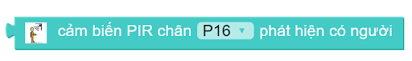
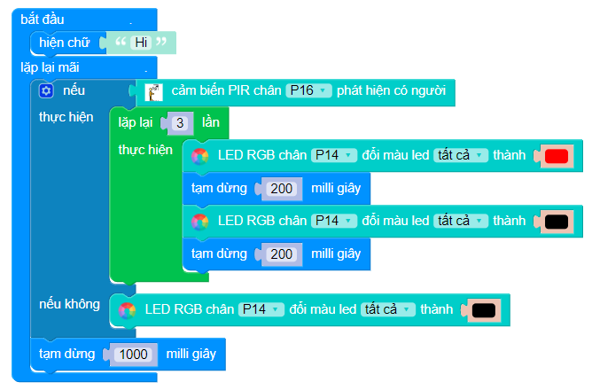
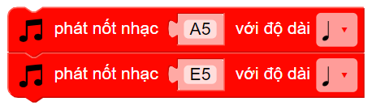
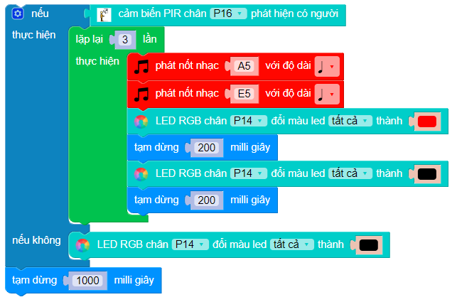

10. Hệ thống chống trộm
1. Mục tiêu
Trong bài học này, chúng ta sẽ cùng lập trình một hệ thống chống trộm, có thể tự động phát ra âm thanh cảnh báo và bật đèn báo động khi có người đến gần khu vực bảo vệ nhé!
2. Thiết bị cần dùng
Mạch Yolo:Bit
Mạch mở rộng Yolo:Bit.

Module 4 LED RGB
{kind=link}
Cảm biến hồng ngoại PIR
{kind=link}
3. Kết nối
Kết nối đèn 4 LED RGB vào cổng P14/P15
Kết nối cảm biến PIR vào cổng P16/P12
{kind=link}
4. Lập trình
Để sử dụng cảm biến phát hiện chuyển động PIR, chúng ta sẽ dùng khối lệnh sau:
{kind=link}
Hãy cùng lập trình tính năng đầu tiên: Nếu như cảm biến chuyển động phát hiện được có người, hệ thống sẽ chớp tắt đèn đỏ 3 lần. Ngược lại, nếu phát hiện không có người thì hệ sẽ tắt đèn (đèn màu đen). Chương trình lúc này sẽ như sau:
{kind=link}
Bên cạnh đó, chúng ta sẽ sử dụng thêm 1 buzzer (1 chiếc loa nhỏ) để phát âm thanh báo hiệu. Trên mạch Yolo:Bit đã được tích hợp một buzzer nhỏ để phát âm thanh.
Để bật âm thanh trên buzzer, các bạn sử dụng 2 khối lệnh sau, nằm ở danh mục ÂM NHẠC:
{kind=link}
Kết hợp 2 khối lệnh trên vào chương trình, ta được chương trình hoàn chỉnh như hình:
{kind=link}
5. Chương trình mẫu
Hệ thống chống trộm : Tại đây
{kind=link}